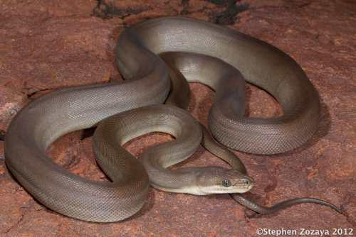

Australian Reptiles
Author: Fred Xu, 33113963 | Github: fx7165
Reptiles in Australia
Australia’s native reptiles span three primary orders: Testudines (turtles), Crocodilia (crocodiles),
and Squamata (lizards and snakes). Across these orders, the country hosts 1,067 unique species
distributed among 19 distinct families.
Squamata accounts for the vast majority of Australian reptile diversity, boasting 1,033 species.
In contrast, Crocodilia is the smallest group, represented by just two native species: the
saltwater and freshwater crocodiles.
Reptile distribution varies dramatically across the country. Western Australia has the highest
diversity, harboring 507 unique species, whereas Tasmania records just 22. Crocodiles are strictly
restricted to the northern reaches of Western Australia, the Northern Territory, and Queensland [1] [4].
Australian Reptile Taxonomy
Reptile State Distribution

Reptiles display an extraordinary diversity in scale, ranging from the largest 6.5-metre Olive Python
down to the largest gecko at just 0.35 metres. This immense variation highlights how evolutionary
pressures have shaped distinct body designs across Australian ecosystems [1].
Reptiles Over-time
IBRA Sub Region Persistence
Species persistence measures the proportion of a region’s original native species expected to survive in the
long term, anywhere across their original range.
In Australia, persistence is assessed across IBRA subregions. IBRA, the Interim Biogeographic Regionalisation
for Australia, divides the continent into bioregions of similar climate, geology, landforms and vegetation, and
these are further split into smaller subregions (419 in IBRA version 7) that capture finer ecological differences.
By measuring species persistence using ecological regions, we can see the habitats where reptiles flourish and
lets us compare how well reptile diversity is holding up in ecologically distinct parts of the country, rather
than relying on state borders [2] [5].
Species Persistence Nationwide
Since 1990, national species persistence has hovered steadily between 922 and 932,
showing minor annual fluctuations but no clear overall trend. The 2024 value (~926)
remains nearly identical to 1990 (~923) [2].
Endangered Animals In Australia
As land develops, animals are pushed out of their natural habitats and ecosystems are getting destroyed.
The data shows that more and more species in Australia are becoming threatened.
Between 2010 and 2023, reptiles climbed sharply from 54 to 88 over the period [3].
Sources:
[1] Australian Reptile Online Database, https://arod.com.au/arod/ |
[2] CSIRO Data, https://data.csiro.au/collection/csiro:65808 |
[3] ABS Environment Statistics, https://www.abs.gov.au/statistics/environment/environmental-accounts/national-ecosystem-accounts-experimental-estimates/latest-release#biodiversity |
[4] State Spatial Data, https://www.abs.gov.au/AUSSTATS/abs@.nsf/Lookup/1270.0.55.001Main+Features10018July%202016?OpenDocument |
[5] IBRA Spatial Data, https://fed.dcceew.gov.au/datasets/fa066cfb26ff4ccdb8172a38734905cc